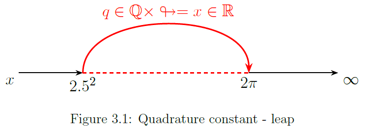
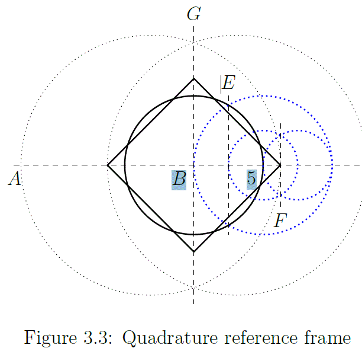

The partial sum of the inverse primorials $P_{s}$ approaches the inverse square root of 2, $\left(\sqrt{2}\right)^{-1}\simeq0.7071067812$, but falls short by some factor.
The primorial delta $\Delta P_{s}$ is the discrepancy between $\left(\sqrt{2}\right)^{-1}$ and the limit of $P_{s}$ which has a closed form $\sqrt{\frac{2\pi}{2.5^{2}}}$ :
The grouping of the primes in an upper and lower bound, column $\uparrow\downarrow$, becomes apparent by analyzing the partial sum increment for each step with respect to the total increment so far.
To apply the progressive sum, an additive function, over the primorial function, a multiplicative function, is inspired by the sum/product equality where a sum over the integers is equal to a product over the primes:
Table 3.2 lists the partial sum increment for each row in table 3.1 in the column $P_{s}\\:increment$.
$P_{n}$, the consecutive primes
$\uparrow\downarrow$, upper and lower bound alternating odd / even n
$P_{s}\\:increment$, the step wise increment in $P_{s}$ from previous to current row
$\frac{lb}{ub}$, the ratio between the $P_{s}\:increment$ for grouped rows $\frac{\left(2n\right)}{\left(2n\right)-1}$
$\Delta\frac{lb}{ub}$, the ratio between the first row and current row $\frac{\left(2n\right)}{\left(n=1\right)}$
Table 3.2 — Primorial lb–ub oscillation
n
\(P_n\)
\(\uparrow\downarrow\)
\(P_s \; increment\)
\(\tfrac{lb}{ub}\)
\(P_{\Delta}=\tfrac{lb_{\infty}}{lb_{n=1}}\)
1
2
ub
\(\tfrac{1}{2}\)
2
3
lb
\(\tfrac{1}{6}\)
\(\tfrac{1}{3}\)
1
3
5
ub
\(\tfrac{16}{3}\,/\,10 = 0.5333\dots\)
4
7
lb
0.1714285714
0.3214285714
0.964285714
5
11
ub
0.5337662338
6
13
lb
0.1714618715
0.3212302701
0.96369081
7
17
ub
0.5337681926
8
19
lb
0.1714619746
0.3212292844
0.963687853
9
23
ub
0.5337681971
10
29
lb
0.1714619747
0.321229282
0.963687846
\(\infty\)
\(\infty\)
\(\sim (\sqrt{2})^{-1}\)
\(0.32 = \tfrac{1}{3.125}\)
\(P_{\Delta}=\tfrac{24}{25}=0.96\)
The partial sum increment, lb/ub oscillation, shows a peculiar alternating progression.
The clear oscillation between a upper and lower bound follows from taking the current partial sum $\left(P_{s}\,\, for\,row\,n\right)$ minus the increment so far $\left(P_{s}\:increment\,\,for\,row\, n-1\right)$.
The column $\frac{lb}{ub}$ contains the ratio between lower and upper bound for each group. Column $\Delta\frac{lb_{n\rightarrow\infty}}{lb_{n=1}}=3\frac{lb}{ub}$ contains the progressive ratio between the current $\frac{lb}{ub}$ row pair with respect to the ratio of the first $\frac{lb}{ub}$ row pair, $\left(\frac{lb}{ub}\right)_{n=1}=\frac{1}{3}$.
The quadrature constant
The square of $\Delta P_{s}$ is defined as the quadrature constant.
The partial sum increment, $P_{s}\:increment$, table 3.2, shows a peculiar alternating progression. The current partial sum $P_{s}\rightarrow n$ minus the increment so far, oscillates between a lower and a upper bound of approximately $ub=\frac{1}{2}$ and $lb=\frac{1}{6}$.
The upper and lower bounds alternate row by row and group the primes like $\left\{ 2,3\right\} ,$$\left\{ 5,7\right\} ,$$\left\{ 11,13\right\} ,$$\left\{ 17,19\right\}$, etc. in some periodic fashion.
For the first two terms $\left\{ 2,3\right\}$ the ratio is exact, $\frac{lb}{ub}=\frac{1}{3}$, the last two terms in the table $\left\{ 23,29\right\}$ approach $\frac{lb}{ub}\simeq0.3212292821\sim\frac{1}{\pi}$. The primorials, and thus the inverse and sum thereof, are rational values.
The ratio lb/ub will, by the topological property of the real numbers, approach $\sim\frac{1}{\pi}$, but must be a rational approximation.
By application of the derived quadrature constant $\looparrowright=\frac{2\pi}{2.5^2}$ the limit can be determined to be exactly $\frac{1}{\pi}\times\looparrowright=0.32\in\mathbb{Q}$. The quadrature constant $\looparrowright$ indicates that a one to one correspondence exist between the Rational numbers $\mathbb{Q}$, and Real numbers $\mathbb{R}$ such that:
The set of rational numbers $\mathbb{Q}$ is countable infinite and can be paired with the natural numbers $\mathbb{N}$, which implies that if the hypothesis is correct, the real numbers $\mathbb{R}$ are also countable infinite.

F3.01 Quadrature constant - leap
Pairing, not by in the limit approaching arbitrarily close to a partner, but rather leap frogging over an infinity of real and rational numbers (see fig. 3.1) to a distinct value.
Mapping the continuum
Figure 3.02 Quadrature continuum
F3.02 Quadrature continuum
Apparently the 'width of a coordinate', on a circumference encodes some property other than 'gradient in spread of arc'.
Picture 3.2 shows, not to scale, the outer circle $\mathbb{R}$ at radius $x=1$, and the inner circle $\mathbb{Q}$ at radius $x=\left(\looparrowright\right)^{-1}$. Both circumferences represent the continuum $\mathbb{R}$ but both differ in length due to the difference in radius.
For every arbitrary small change in angle the radius cuts each circle in exactly 1 distinct dimensionless coordinate $\frac{1}{\mathbb{R}}$. This is counter-intuitive, how can the coordinate be dimensionless if circumferences that differ in length are divided up in essentially the same number of coordinates?
We see that at $\angle 180^{\circ}$ radius 1 gives $c=\frac{2\pi\times1}{2}=\pi$ and for radius $\left(\looparrowright\right)^{-1}$ it is $c=\frac{2\pi\times\left(\looparrowright\right)^{-1}}{2}=3.125$.
Apparently the 'width of a coordinate', on a circumference encodes some property other than 'gradient in spread of arc'.
Because radii intersect concentric circles at $\frac{1}{\mathbb{R}}\in\mathbb{R}$, a dimensionless point, this leads to a intimate and unique connection between the sets $\mathbb{Q}$ and $\mathbb{R}$.
The circle is the continuum $\mathbb{R}$, and measures $\frac{2\pi}{\mathbb{R}} = 1$.
The quadrature constant $\looparrowright=\frac{2\pi}{2.5^2}$ provides a smooth mapping from $\mathbb{Q}$ to $\mathbb{R}$ if we define $\mathbb{Q}$ as a circle with radius $r=\left(\looparrowright\right)^{-1}$, and $\mathbb{R}$ as a circle with radius $r=1$.
A rotation over $180^{\circ}$ results for radius 1 in $c=\pi\in\mathbb{R}$ and for radius $\left(\looparrowright\right)^{-1}$ to $c=3.125\in\mathbb{Q}$.
Apparently the radius has a curvature distorting the observers view such that discrete rational number intervals seem to spread out and project as indeterminable (irrational) real number values.
As if a number-theoretical uncertainty principle exists with a horizon $\mathbb{R}$ projected at a factor $\Delta\frac{r}{rq}=\frac{2\pi}{2.5^2}=\looparrowright$ from any arbitrary point chosen in $\mathbb{Q}$.
There exist a observational limit at radius $2\pi$ which transforms any discrete interval in what seems to be a continuum of real numbers.
If we choose position at $r=\frac{2\pi}{\looparrowright}=2.5^2$, or $\frac{2\pi}{\looparrowright}$ from the horizon at $\mathbb{R}$, we snap back on the grid of rational coordinates at $\mathbb{Q}$. Both coordinates $\pi$ and $3.125$ map to the exact same coordinate but only differ by perspective.
Apparently distinct rational inputs map to distinct irrational outputs because intrinsically $\mathbb{Q}\equiv\mathbb{R}$. This is a bold statement that brings the validity of the continuum hypothesys into question, therefor needs to be justified.
Quadrature reference frame

Figure 3.03 Quadrature reference frame
Figure 3.3 is a Cartesian construction with compass and (unmarked) straightedge. The construction simply begins with straight line 'A', a random point 'B', and a circle centered on 'B' of as yet undetermined radius.
Now define the radius to $r=5$ and construct '$E=2.5$' and '$F=2.5^2$'.
Proceed by constructing the square. This results in a square and circle of approximately the same area.
Transcendental numbers are not constructible with a set of compasses and (unmarked) straight edge (Wikipedia: Constructible number), but in this reference frame we are able to construct an exact solution for $A_{\square}=A_{ \circ}$.
In a strict Cartesian sense, clearly $A_{\square}\neq A_{\circ}$, however, we did not simply declare $A_{\square}=A_{\circ}$, but rather defined a geometric context in which the equality exist. Assuming the hypothesis correct this is expressed by
Each distinct dimensionless point (coordinate) addressed on area $A_{\square}$ maps to exact one, yet indeterminable fuzzy surface like, 'distributed coordinate' on the area $A_{\circ}$. This aspect of 'fuzzy spread' is closely related to the distribution of the (non trivial) zeros of the Riemann zeta function for which later a model will be presented.
The outline of that model starts with defining the geometry in which to place the quadrature constant $\looparrowright$. The placement is almost derived in figure Quadrature reference frame, point $F=2.5^2$. In fact $F\looparrowright=2\pi$, which is in fact the horizon, or observational limit at radius $2\pi$.
Point 'F' functions as a pole at radius $x=2.5^2$ and is the reference point from which all $x\in\mathbb{Q}$ are calculated. The primorial delta $P\Delta=0.96$ (see table 3.2) defines the x-coordinate $P\Delta\times2.5^2=6$ in figure 3.4 Primorial hexagon.
We find in fact that the x-axis can be subdivided in exactly 25 parts of $\frac{1}{4}$, and that $\frac{24}{25}\times 2.5^2=6$, which makes the pole a $25:1$ scale unit circle.
The pole at $\frac{25}{25}$ can therefore be unambiguously constructed starting from any inscribed hexagon which, enforced by $P\Delta$, projects at $x=\frac{24}{25}$ within this geometric framework.
Lastly, observe that the inverse of the primorial delta, multiplied by the quadrature constant, gives an angle of $60^{\circ}=\frac{\pi}{3}$. The hexagonal chord and the associated equilateral triangle will be a further crucial key element in this hypothesis.
The pole at x=25/25 can therefore be unambiguously constructed starting from any inscribed hexagon which, enforced by the primorial delta, projects at x=25/25 within this geometric framework.